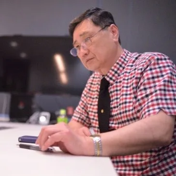
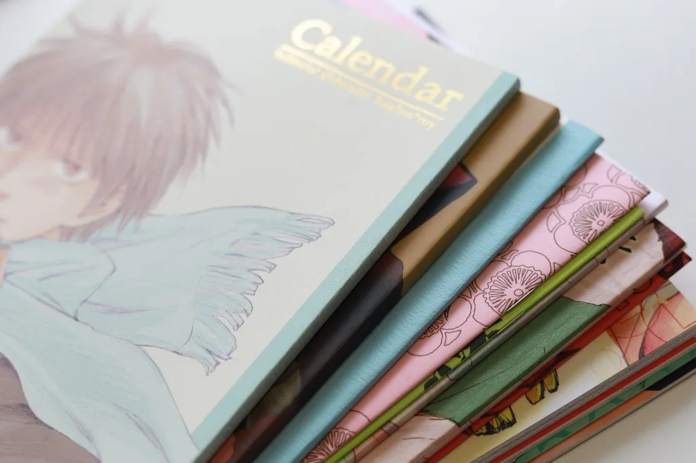
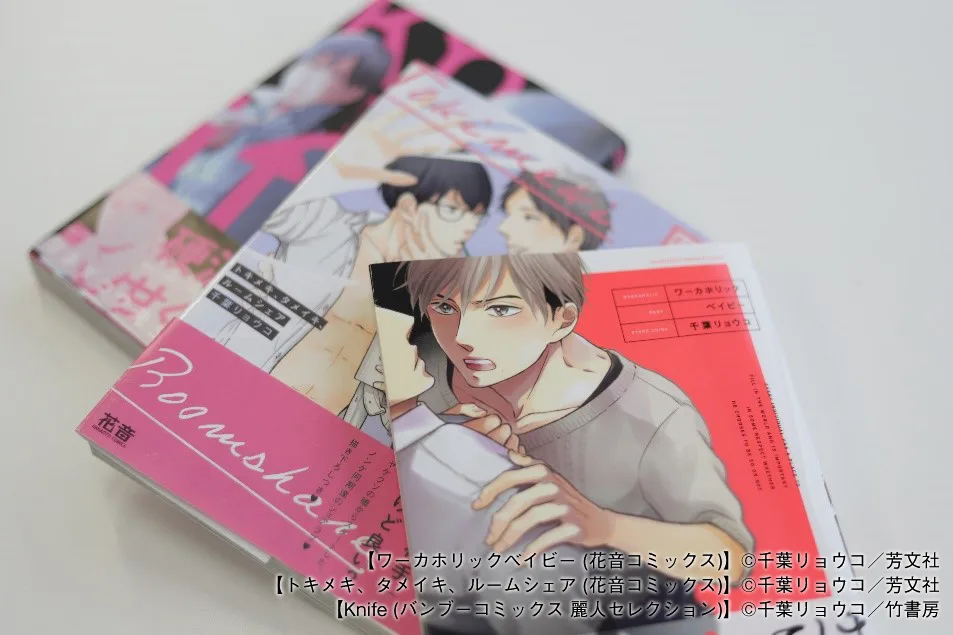
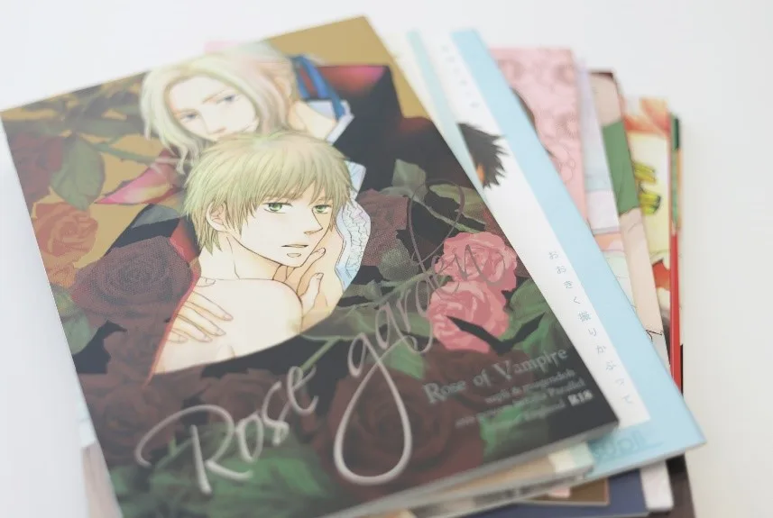
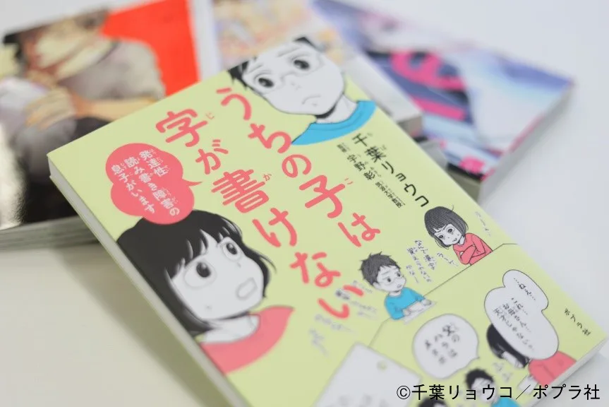
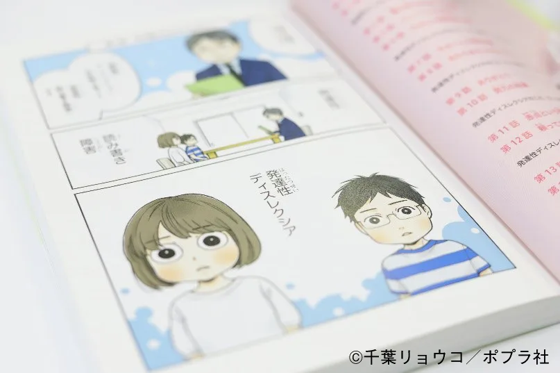
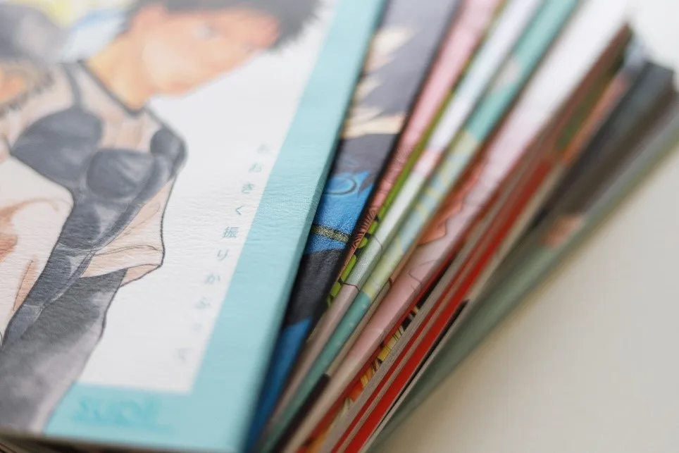

HOPE TALK
第一線で活躍するクリエイターたちは、一体どのようにして自身のキャリアを切り拓いてきたのでしょうか？
現役のクリエイターたちを招き、彼らを「印刷会社」という立場から支えるホープツーワンの熟練社員、﨑山がその秘密に迫る対談企画「ホープトーク」。
今回のゲストは、漫画家の千葉リョウコさんです。
漫画家でありながら、旦那さんと3人のお子さんに加えトイプードルという5人+1匹家族の母親として主婦業もこなす千葉さん。
長男が小学6年生のときに「発達性読み書き障害」と判定されてから、実体験をもとに描いたコミックエッセイ「うちの子は字が書けないー発達性読み書き障害の息子がいますー」を出版し、大きな話題を集めました。
結婚・出産・子育て……さまざまな人生のターニングポイントを経ても、変わらぬペースで作品を生み出し続ける千葉さんにとって、漫画とは一体どんな存在なのでしょうか。
千葉リョウコ
千葉県在住の漫画家。5人+1匹家族の母でもあり、長男が小学6年生のときに「発達性読み書き障害」と判定されてから、実体験をもとに描いたコミックエッセイ「うちの子は字が書けないー発達性読み書き障害の息子がいますー」を出版して話題を集める。
そのほかの作品はBLが中心で、代表作は「ワーカホリックベイビー」・「月の街、花の都」など。

﨑山学株式会社ホープツーワンに勤続27年のベテラン社員。フロントに立ってこれまでに多くの漫画家の要望に耳を傾けてきた。人情味あふれる性格で知られる、ホープツーワン窓口の名物キャラクター。
目次
・“褒められる喜び”が漫画家としての原体験に
・読者や編集者の期待に応えるのがプロの仕事
・ホープツーワンを選び続ける理由は、理想的な“肌色”の再現性
・漫画家として、母親として
・「ひとつの作品を描きあげる達成感を知ってほしい」漫画家を目指す人に伝えたいメッセージ
・まとめ
“褒められる喜び”が漫画家としての原体験に
—取材へのご協力ありがとうございます。この連載では、千葉さんの漫画家としてのキャリアや作品へのこだわりを伺い、プロとして活動するためのヒントを探っていければと考えております。はじめに、千葉さんはなぜ漫画家を目指そうと思ったのか教えていただけますか？
「私は『漫画家になろう』とか『プロになろう』とか思ったことはあまりないんです。物心ついたときから絵を描くのが好きだったので、私にとって漫画を制作することはデビュー前からのライフワークのような感覚です。出版社から声を掛けてもらって2006年にコミックスでプロデビューしましたが、それまでにも同人誌で100冊くらい作品を発表していました。」

▲千葉リョウコさんの同人作家時代の作品
—なるほど。ずいぶん前から日常的に作品を作り発表していたのですね。初めて同人誌を作ったのは何歳ころだったのでしょう？
「中学３年生の時です。我ながら、早いですよね。（笑）学校の友だちと描いた作品を近所の印刷会社のおじさんに頼んで印刷してもらいました。そして、高校1年生くらいから地元である愛媛県で開催されていた同人誌即売会に参加するようになりました。」
—それはかなり早いですね！しかし、中学生が印刷……お金はどうしたんですか？
「母に借りていました。（笑）両親は私が漫画を描くことをすごく理解してくれて、子どものころから絵を見せると褒めてくれたし、原稿用紙やペン先、スクリーントーンなど必要なものも買ってくれました。作品を作ってイベントに持っていくと、本を買ってくれた人が、面白かったですと手紙や花束をくれるんです。それを持って帰ると母もすごく喜んでくれて。私の漫画で喜んでくれる人がいるんだなと思って…調子に乗ってどんどん描きました（笑）よく『子どものころどんな絵を描いてましたか？』と聞かれますが、何を描いたかはあまり覚えておらず、それよりも“褒められた”という記憶の方が鮮明に残っています。」
読者や編集者の期待に応えるのがプロの仕事

▲商業誌デビュー後の作品。手前から
【ワーカホリックベイビー (花音コミックス)】©千葉リョウコ／芳文社
【トキメキ、タメイキ、ルームシェア (花音コミックス)】©千葉リョウコ／芳文社
【Knife (バンブーコミックス 麗人セレクション)】©千葉リョウコ／竹書房
—ここまでの話を伺うと、まさに呼吸するように、自然に作品を作り続けてきたという印象を受けます。プロとしてデビューするうえで意識したことはありますか？また、編集者などの他者の声が作品に入ることになると思うのですが、プロ以前と以後で漫画の作り方に変化はありましたか？
「私自身、絵がそこまでうまいわけでもなく、ストーリーも突飛なものが書けるわけではないので、デビューできたのは本当にラッキーだったと思います。プロとして漫画を描き続けていくために、まずは締め切りを守るなどの基本的なことを意識しています。それから、私の場合は編集者さんの意見をすごく取り入れます。読者層や出版社によって作風も変えたりします。その時に流行っている題材なども取り入れて、読み手に合わせようとするスタイルはデビュー前も後も変わっていないですね。そこに編集さんという作品を冷静に見てくださる方の意見を入れて、どうやったら読者さんに楽しんでもらえるか、ということをもっと考えるようになりました。」
—そのうえで、すべての作品に共通するようなこだわりはありますか？
「読者を意識して編集者の意見を取り入れながらも、必ず作品の中でどこか一箇所は“自分が本当に表現したいこと”を込めます。キャラクターの本当の気持ちを感じさせる裏設定や伏線、行間など、普通に読む分にはサラッと流してしまったり、もしかすると気にも留めないポイントかもしれません。しかし、中には『そういえばさっきのセリフの意味は何？』と何か引っかかるような感覚を覚えて作品のファンになってくれる人もいるようです。」
ホープツーワンを選び続ける理由は、理想的な“肌色”の再現性

▲ナチュラルで自然な肌色を表現。細やかな技を持つホープツーワンならでは。
—ありがとうございます。ここまでお話を伺って、他者の意見と自分の意見をとても上手に作品に込める方なのだと感じました。少し印刷に関しても伺いたいのですが、初めてうちに印刷を依頼してくださった時のことを覚えていますか？
「初めてお願いしたのは2004年ですね。それまではいろいろな印刷所にお願いしていましたが、一度ホープツーワンさんにお願いしてからはホープさん一筋です。これまでに60冊くらいはお願いしてますね。」
—ありがとうございます。なぜうちをご指名いただいているのでしょうか？
「まず、ホープツーワンさんの印刷の“肌色”が好きなんです。肌の色はデリケートで、以前は印刷の仕上がりを見て『肌色がイメージと違う……』と思うことがよくありましたが、ホープツーワンさんは私の好きな色味を出してくれます。それに、納期もかなり融通を利かせてくれるので、急なお願いにも対応してもらって本当に助かっています。あとは人柄でしょうか。私が初めてホープツーワンさんに印刷を依頼した時に担当してくれたのが﨑山さんで、それからずっと﨑山さんに担当してもらってきたので、﨑山さんに『任しときなさい！まだ全然余裕です！』と言っていただけると心から安心しますね。」
ホープツーワンの同人誌印刷ラインナップはコチラ！見積もりnaviはとっても便利！あなたの作りたいがきっと見つかる！
漫画家として、母親として

©千葉リョウコ／ポプラ社
—千葉さんは20代でご結婚されてその後母になりましたが、子育てと漫画家の仕事の両立はどのようにされているのでしょうか？
「子育てって朝昼晩のご飯を作ったり、日があるうちに洗濯物を干したり、夜は子どもを寝かしつけたりと、毎日時間ごとにいろいろなタスクがあるじゃないですか。その中で、ちょっとした隙間の限られた時間で漫画を描かないといけないので、時間に対する感覚はそれまで以上にシビアになりました。料理をしながらネタを考えたり、作品のペン入れをしながら次回作の企画を考えていたり、起きている間は思考もフル回転です。描くのは早い方なので、結婚してから10年間で同人誌だけで100冊くらいは出しました。商業誌ではコミックスが現在までに24冊出ています。」
—すごいですね！子育てに追われてどんなに忙しくても漫画を書き続ける理由はなんなのでしょうか？
「そうですね……結局子どものころから感じていた『漫画を描けば誰かに褒めてもらえる』ということが原動力になっているのだと思います。子育てって、いくら頑張っても誰も褒めてくれないんですよね。イベントで自分の漫画を販売すれば、誰かが喜んでくれます。その笑顔が自分自身の“ご褒美”みたいなもので、子育ても頑張ることができました。」
—なるほど、「3つ子の魂100まで」といいますが、原体験の影響が千葉さんを動かし続けているのですね。これまでBLを中心に描いてきた千葉さんがコミックエッセイ「うちの子は字が書けないー発達性読み書き障害の息子がいますー」を出版した理由は？
「息子が持っている『発達性読み書き障害』という障害を多くの人に知ってほしいという気持ちで出版しました。本を読んでくれた人の中でも、特別支援学級の先生など教育関係の人から『恥ずかしながらあなたの本でこの障害のことを知りました。』とメッセージをいただくことがあり、自分の漫画が社会のために役立ったという、今までにないやりがいを感じることができました。しかし、それと同時にいろいろな葛藤もありました。」

▲息子さんが『発達性読み書き障害（発達性ディスレクシア）』と判定されたシーン。息子と母の二人三脚の日々を赤裸々に描いたエッセイ。©千葉リョウコ／ポプラ社
—それは一体どんな葛藤だったのでしょうか？
「それまで私が描いてきた作品は100%妄想から生まれていましたが、このときやろうとしたのは自分のことや家族のことを赤裸々に描くということ。しかも障害というデリケートな内容も含んでいます。これまでの私の作品を愛してくれたファンの人と、この作品で私のことを知る人がどんな反応を示すのか、とても不安でした。それでも家族の協力もあり、何よりも息子が『描いてみたら？』といってくれたので、勇気を出して出版を決意しました。実際に出版してからそれまでの心労などもあって一度体を壊してしまいましたが、今となってはやはり新しいことに挑戦できたとてもいい機会だったと思います。」
「ひとつの作品を描きあげる達成感を知ってほしい」漫画家を目指す人に伝えたいメッセージ
—とても貴重なお話を伺えました。生きることと描くことがとても密接につながっていて、それが千葉さんの作品全体に醸し出されているのだなと感じました。妄想から現実へと新しいチャレンジにも果敢に取り組んでいますが、千葉さんの夢や今後の展望を教えていただけますか？
「『うちの子は字が書けないー発達性読み書き障害の息子がいますー』を出版して、この歳になってもまだ新しい挑戦ができるんだ、誰かの役に立てるんだと、自信になりました。今後も、BLだけでなく自分が楽しめる新しいことにどんどん挑戦していきたいです。」

—それでは最後に、さまざまな経験をしながらも漫画を描き続けてきた千葉さんから、漫画家やイラストレーターを目指す方に向けて何か伝えたいことはありますか？
「プロの漫画家を目指している人は、やはり漫画をとにかく描いて描いて、描きまくってほしいですね。最近は絵はうまいのに最後まで作品を描きあげられないという人も少なくない気がします。パロディでも20ページ程度の短編でもなんでもいいので、まずは1冊完成させてみること。その達成感を味わうと、必ず次につながると思います。それと同時に、読者としていろいろなジャンルの漫画や小説を読むと良いと思います。自分が描きたいものや興味があるものとは違ったものを取り入れることで視野が広がり、自分の作品にも厚みが出るはず。ぜひ臆病にならず、挑戦することを楽しんでほしいです。」
まとめ
千葉さんの言葉は気取らずフラットで、読者に合わせて作風を変える柔軟な姿勢が現れているかのようでした。子育てをしながらも漫画を描き続けてきた千葉さんのエネルギーの源は、「誰かを喜ばせたい」という原体験。
そんな母親の背中を見て育ったせいか、今は高校1年生の娘さんもイラストを描き始めているのだそう。
娘さんの若い才能がいつか花開く日がくるかも？千葉さんの今後の活躍とともに注目です。
千葉リョウコ先生
千葉県在住の漫画家。5人+1匹家族の母でもあり、長男が小学6年生のときに「発達性読み書き障害」と判定されてから、実体験をもとに描いたコミックエッセイ「うちの子は字が書けないー発達性読み書き障害の息子がいますー」を出版して話題を集める。
そのほかの作品はBLが中心で、代表作は「ワーカホリックベイビー」・「月の街、花の都」など。